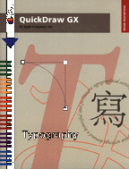

Legacy Document
Important: The information in this document is obsolete and should not be used for new development.
Important: The information in this document is obsolete and should not be used for new development.
QuickDraw GX Typography
Inside Macintosh: QuickDraw GX Typography is your essential guide to using QuickDraw GX to add powerful and sophisticated text-handling capabilities to your application. This book presents an overview of typographic concepts, numerous programming examples, and reference material for the data structures and functions you use to create text with QuickDraw GX.Before reading this book, you should be familiar with the general concepts of QuickDraw GX, as described in Inside Macintosh: QuickDraw GX Objects. Inside Macintosh: QuickDraw GX Typography starts with an introduction to the Quickdraw GX approach to typography, which treats text lines as shape objects. It then describes
For information on creating and manipulating graphic shapes, see Inside Macintosh: QuickDraw GX Graphics. For information on printing with Quickdraw GX, see Inside Macintosh: QuickDraw GX Printing.
- how to use the three fundamental kinds of typographic shapes--text shapes, glyph shapes, and layout shapes
- how to apply stylistic variations to text
- how to use information in QuickDraw GX fonts to provide the highest precision and flexibility in advanced text layout
- how to lay out horizontal and vertical lines of text
- how to correctly highlight, hit-test, and draw carets in text
Availability: Click below to obtain Inside Macintosh: QuickDraw GX Typography in any of the following formats.
Printed Acrobat (7095K)